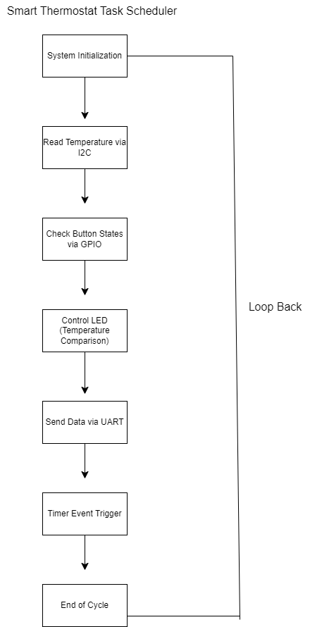

This project demonstrates a smart thermostat system built on the Texas Instruments CC3220x LaunchPad, a microcontroller commonly used in embedded systems. Embedded systems are small, dedicated computers integrated into larger devices — like thermostats, medical devices, or even space probes — where they control specific functions in real-time.
The thermostat monitors ambient temperature, allows user input via physical buttons, and controls an LED to simulate a heating element's status. It also mimics data reporting to a server, just like how smart home devices share data with a mobile app or cloud platform.
Several hardware communication protocols were used to bring this system together: I2C (Inter-Integrated Circuit) was used to communicate with a digital temperature sensor — think of it like a short-range conversation between two components on the same circuit board. UART (Universal Asynchronous Receiver/Transmitter) enabled data to be sent to a virtual server, similar to how your computer communicates with a USB device. GPIO (General Purpose Input/Output) was used to detect when buttons were pressed by the user.
Together, these elements form a responsive, modular system that could serve as the foundation for more advanced smart home technologies. This project emphasizes clean architecture, hardware integration, and real-time feedback — core principles in embedded software engineering.
At the heart of the smart thermostat system is a task scheduler — a logical structure that determines the order and timing of each system action. In embedded systems like this one, we can’t rely on large operating systems to manage tasks in the background, so we build our own simple scheduler to make sure each component runs in the right order, at the right time.
The diagram below illustrates the main control flow of the thermostat:
The cycle begins with System Initialization, where hardware peripherals like sensors, timers, and communication interfaces are configured. Once the system is ready, it proceeds to Read Temperature via I2C, which retrieves real-time temperature data from a digital sensor.
Next, the program checks for user input in Check Button States via GPIO. These physical buttons allow users to raise or lower the target temperature. The Control LED step compares the current room temperature with the setpoint and updates the LED status accordingly — for example, turning the light on if the room is too cold.
After that, the system enters the Send Data via UART stage. Here, simulated data is packaged and sent out as if reporting to a remote server. This step mimics how smart devices communicate with cloud platforms or mobile apps in real-world IoT systems.
Finally, a Timer Event Trigger introduces a short delay or interval before the scheduler reaches the End of Cycle, where it loops back and starts again. This continuous loop ensures the system stays responsive and up to date, monitoring and reacting to new temperature readings and user actions in real time.
This modular, loop-based approach is a common practice in embedded systems, and designing it from scratch helped reinforce core concepts like system timing, I/O coordination, and real-time responsiveness.
The smart thermostat was developed using Texas Instruments’ Code Composer Studio and programmed for the TI CC3220x LaunchPad — a powerful microcontroller designed for connected embedded applications. The firmware implements real-time temperature monitoring, user input handling, LED status control, and UART communication using onboard peripherals and drivers from TI’s Software Development Kit (SDK).
I2C (Inter-Integrated Circuit) was used to retrieve live temperature data from a TMP006 digital sensor.
GPIO (General Purpose Input/Output) was used to detect button presses and to control an LED that reflects the system’s heating status.
UART (Universal Asynchronous Receiver/Transmitter) was used to simulate data transmission to a remote server, mirroring how real-world IoT devices report to cloud platforms.
I conducted a technical comparison of three microcontroller platforms — TI, Microchip, and Freescale (NXP) — to evaluate peripheral support, memory capacity, Wi-Fi integration, and development ecosystem.
The CC3220x includes built-in Wi-Fi (802.11 b/g/n) and secure socket support, making it ideal for cloud-based communication. It also includes hardware-based encryption and a secure boot process — critical features for any real-world IoT solution.
The TI platform offers 1MB of Flash and 256KB of SRAM, which provides ample room for modular code, expansion, and future feature additions such as mobile app connectivity or external sensor integration. These specifications exceed the minimum requirements and allow for scalability.
Below is a snippet from the system’s main file, which initializes the board, starts the lightweight TI NoRTOS scheduler, and launches the main application thread:
int main(void)
{
Board_init(); // Initialize board peripherals and drivers
/* Start NoRTOS (TI’s lightweight real-time OS) */
NoRTOS_start();
/* Launch main thread where application logic runs */
mainThread(NULL);
while (1) {}
}
The complete implementation, including task scheduler logic, I2C sensor integration, UART communication routines, and project documentation, is available here:
🔗 View Code on GitHub
One of the project’s standout achievements was the successful integration of multiple hardware communication protocols — I2C, UART, and GPIO — into a unified, responsive system. I effectively implemented a task-driven architecture that ensured real-time feedback from the temperature sensor, immediate LED status updates, and seamless user interaction through physical buttons. Additionally, simulating cloud communication via UART demonstrated a working prototype that could easily transition into a connected IoT device.
While the system operated reliably under normal conditions, I identified opportunities to further optimize the task scheduler for speed and responsiveness. The system could benefit from interrupt-based scheduling for certain tasks rather than a looped polling model. Additionally, adding advanced error handling for UART and sensor read failures would improve system robustness, especially in edge cases or production scenarios.
To support development, I utilized TI Code Composer Studio for coding and debugging, along with draw.io for planning system state diagrams and task flow. I also referenced TI’s developer forums, official documentation, and GitHub repositories from the embedded systems community to troubleshoot hardware communication and system timing behavior. These resources not only helped solve project-specific issues, but also expanded my embedded systems knowledge base for future projects.
This project strengthened a variety of technical and problem-solving skills that are highly transferable to both embedded and general software engineering roles:
Beyond the technical aspects, the iterative problem-solving and hands-on implementation process helped reinforce agile thinking, adaptability, and communication — all essential skills for professional development and team collaboration.
The codebase was written with long-term usability in mind. By modularizing core functions and following consistent naming and commenting practices, I ensured that new developers or collaborators could easily understand and extend the system. The design supports scalability; additional sensors, controls, or outputs could be added with minimal structural changes, making this a strong foundation for future smart home applications.
This project provided a comprehensive, hands-on opportunity to design and implement a real-world embedded system from the ground up. Through the integration of multiple communication protocols, responsive user controls, and simulated server communication, I successfully created a functional prototype that mirrors the behavior of a commercial smart thermostat.
Beyond just achieving technical functionality, the experience deepened my understanding of how software interacts with hardware in a live environment. I gained insight into system design considerations such as timing, modularity, and error handling — all of which are crucial for building reliable and scalable embedded applications.
This smart thermostat project represents more than a school assignment; it’s a practical demonstration of my ability to design, build, and document embedded solutions that can evolve into real-world products. The knowledge and skills developed during this process directly contribute to my growth as a software engineer and will continue to inform how I approach future hardware-integrated and IoT-based systems.